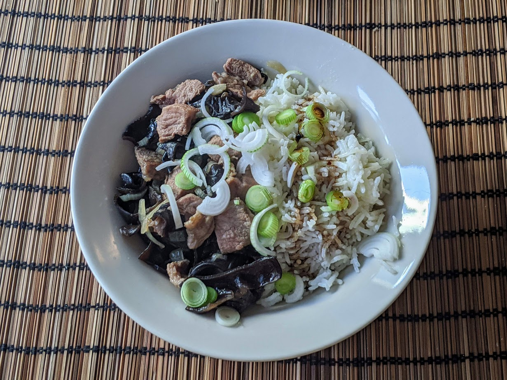

Joue de porc à la citronnelle

Pour 3 personnes :
- 400-500g de joue de porc (ou d'une autre partie bien tendre)
- Un oignon
- Une gousse d'ail
- 5-10g de champignons noirs (« oreilles de judas ») séchés
- Une cuillère à café de citronnelle en poudre
- Un peu de vin blanc
- Un peu de sauce soja
- (Facultatif) Un petit oignon frais
- Sel, poivre, huile d'olive
- Mettre les champignons à tremper dans de l'eau chaude. Couper le porc en lanières, et le mettre à cuire dans un peu d'huile au fond d'une cocotte.
- Éplucher et hacher l'oignon et l'ail, couper les champignons en morceaux pas trop gros, et les faire cuire dans une autre poêle avec la citronnelle.
- Lorsque le porc est doré, ajouter du vin blanc ; et lorsque les oignons sont translucides, ajouter de la sauce soja.
- Mélanger le tout dans une seule casserole, ajouter un peu d'eau pour que ça baigne, et faire cuire jusqu'à ce que ça soit bien tendre (typiquement, une demi-heure). Servir chaud avec du riz parfumé, parsemé de l'oignon frais émincé.
Retour à la liste des recettes